各位，智能工作的世界已经永远改变了。智能成本崩塌正在摧毁“按席位付费”的软件模型。微软与SaaS公司的困局难解。几乎所有的既有巨头都会受伤。别听任何人说“这对软件公司是好事，因为他们会卖更多软件”。
任何需要人类点击按钮、收集信息、把它重新格式化成另一种媒介（邮件、图表、Excel、演示文稿）的工作，都面临巨大风险。
全球超10 亿的信息工作者正在遭受巨大的技术冲击，当他们被迫转型，整个劳动力市场都将重塑。
Claude Code 是拐点
它是什么、我们如何使用它、行业连锁反应、微软的两难、为什么 Anthropic 正在赢
目前，GitHub 公共提交（public commits）里有 4% 是由 Claude Code 撰写的。按照当前轨迹，我们认为到 2026 年底，Claude Code 将占到所有日常提交的 20% 以上。你眨个眼的功夫，AI 就把软件开发吃掉了。
我们的姊妹刊物 Fabricated Knowledge 曾把当前的软件比作互联网崛起时的“线性电视”，并认为 Claude Code 的兴起，会在软件之上叠加出一层新的智能，类似 DRAM 相对于 NAND 那样的分层工作。今天，SemiAnalysis 将深入讨论 Claude Code 的影响、它到底是什么、以及为什么 Claude 如此强。
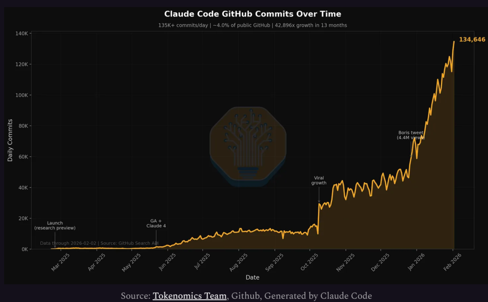
我们认为，Claude Code 是 AI “代理（Agents）”的拐点，也是 AI 未来运作方式的一瞥。它有望在 2026 年推动 Anthropic 的收入出现非凡增长，让这家实验室显著跑赢 OpenAI。
我们建立了一个详细的 Anthropic 经济模型，精确量化了其收入与资本开支（capex）对云合作伙伴（AWS、Google Cloud、Azure）的影响，以及对相关供应链（Trainium2/3、TPU、GPU）的传导。这正是 Tokenomics 模型的核心目的。
Anthropic 预计在未来三年新增的电力规模将与 OpenAI 相当。关于 Anthropic 与 OpenAI 的数据中心逐栋楼追踪，请参阅我们的 Datacenter Industry Model。Sam 的 AI 实验室正明显遭遇多个数据中心延期，我们在新闻爆出前数月就已指出——尤其是在我们对 Coreweave 2025 年 Q3 财报的前瞻中，我们明确提示过其 CapEx 指引将大幅低于预期。
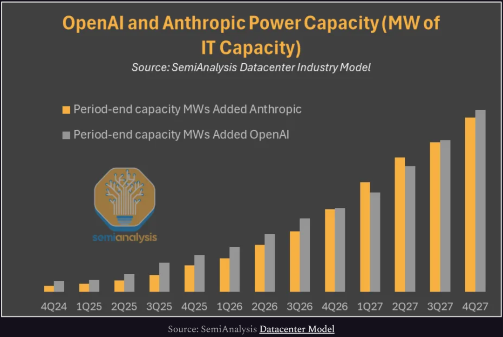
因为更多算力意味着更多收入，我们可以预测 ARR 增长，并把 Anthropic 与 OpenAI 直接对比。
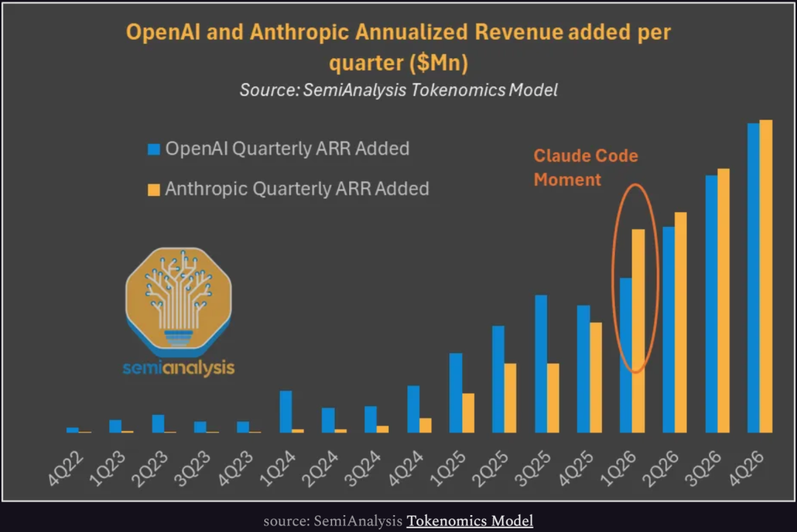
值得注意的是，我们的预测显示，Anthropic 的季度 ARR 新增已经超过了 OpenAI。Anthropic 每月新增的收入高于 OpenAI。我们认为，Anthropic 的增长将受限于算力供给。
让我们更深入地拆解 Anthropic 的皇冠明珠：Claude Code。
Claude Code 与代理化未来
代理将是“有机智能（人类）”与“人工智能（AI）”交互的主要方式。但 Claude Code 同时也展示了反方向：代理如何与人类互动。
我们认为，AI 的未来在于对 token 的编排（orchestration），而不只是以基础成本出售 token。以历史为鉴，我们把 OpenAI 的 ChatGPT API 视作 token 的“呼叫—响应”，类似 Web 1.0 时代用 TCP/IP 把用户连接到互联网上托管的静态网页。TCP/IP 是基础技术，但它只是实现互联网（Web 2.0）与动态网页的手段。今天，互联网依然用 TCP/IP 包来组织的信息规模远超静态网站。协议重要，但真正创造数万亿美元价值的是建立在协议之上的应用。
这就是为什么 SemiAnalysis 认为，我们又来到 AI 的另一个关键时刻——它匹配、甚至可能超过 2023 年初的 ChatGPT 时刻。
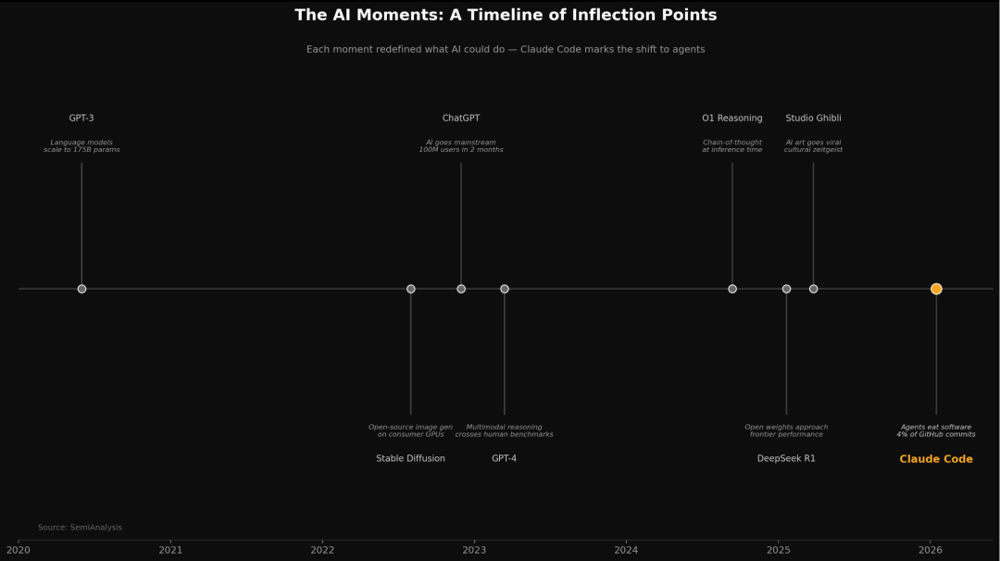
每一次“时刻”都扩展了 AI 能做的事：GPT-3 证明了规模化有效；Stable Diffusion 展示了 AI 能生成图像；ChatGPT 证明了“对智能的需求”；DeepSeek 证明了可以用更小规模做到；o1 展示了你可以把模型扩展到更强表现。Studio Ghibli 的病毒式传播只是采用节点，而 Claude Code 则是在代理层面的一次新突破：把模型输出组织成“更像东西”的东西。
Claude Code 是什么？
Claude Code 是一个终端原生（terminal-native）的 AI 代理，它不是像 Cursor 那样围绕 IDE 或聊天侧边栏来设计。Claude Code 是一个 CLI（命令行界面）工具：它会读取你的代码库、规划多步骤任务，然后执行这些任务。把 Claude Code 只当作“写代码工具”可能并不准确，它更像是 Claude Computer。只要拥有对你电脑的完整访问权限，Claude 就能理解环境、制定计划，并在用户指导下迭代完成计划——全程可被用户指挥。
Claude Code 不止会写代码，它是 AI 代理的最佳例子。你可以用自然语言描述目标与结果，而不是实现细节。你给 Claude（CLI）输入一个表格、一个代码库、一个网页链接，然后要求它完成某个目标；它会制定计划、核对细节、然后执行。
这是对未来的一瞥，但它今天已经在软件里发生了。你最爱的工程师正在“氛围编程（vibe coding）”：
Andrej Karpathy（他在一年前提出“vibe coding”一词）公开讨论这种相变，并特别说：“我已经注意到，我手写代码的能力正在慢慢萎缩。生成（写代码）与判别（读代码）是大脑里两种不同能力。”
Vercel 的 CTO Malte Ubl 声称，他“新的主要工作”是“告诉 AI 它做错了什么”。
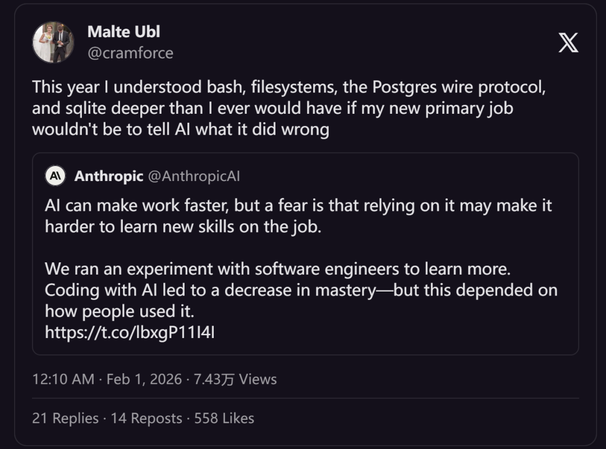
NodeJS 的作者 Ryan Dahl 说：“人类写代码的时代结束了。”
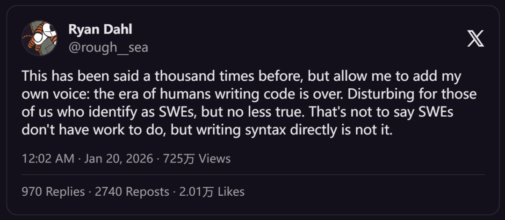
Ruby on Rails 的作者 David Heinemeier Hansson 带着某种预期式的怀旧，一边手写代码一边追忆过去的手写时代：
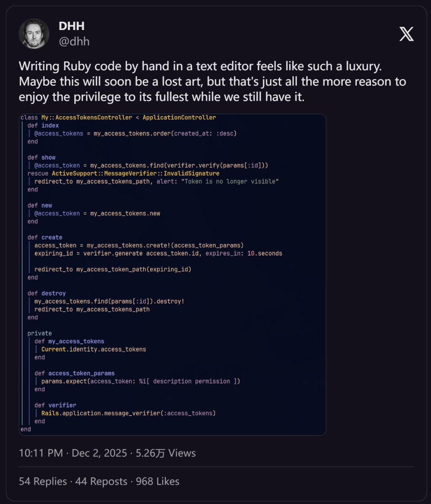
Claude Code 的创造者 Boris Cherny 说：“我们几乎 100% 的代码都是由 Claude Code + Opus 4.5 写出来的。”
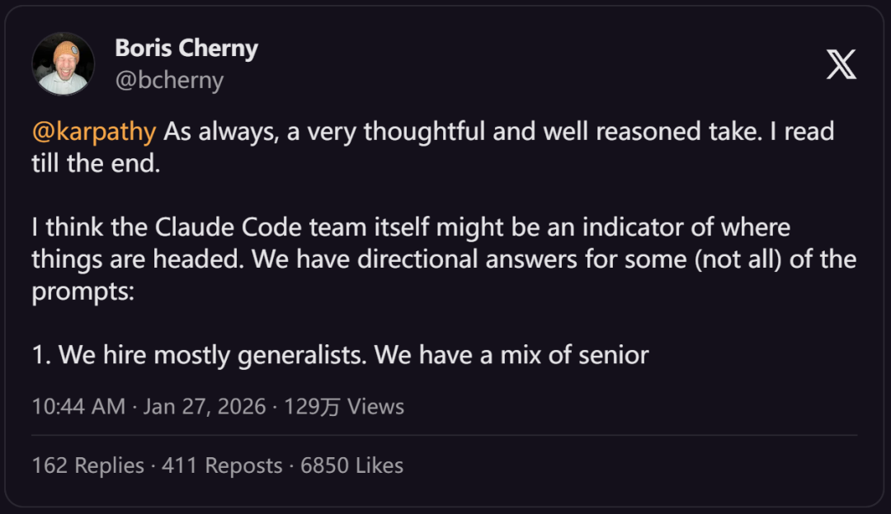
甚至 Linus Torvalds 也在 vibe coding：
https://github.com/torvalds/AudioNoise
但这不只是程序员的事。在 SemiAnalysis，我们的分析师与技术人员承担不同角色与责任。Datacenter Model 团队每周要审阅数百份文档；AI Supply Chain 团队要检查包含数千行条目的 BOM；Memory Model 团队要在现货价格爆炸时近实时地建立预测；技术团队要维护 InferenceMAX 的在线仪表盘，包括每晚在 9 种不同系统类型/集群上运行最新的软件配方。从监管文件到许可审批，从规格书到文档，从配置到代码，我们与电脑交互的方式已经变了。
例如，我们的行业模型分析师如今用 Claude Code 在大型数据集里生成大量有用的图表与分析，用于解析并传达关键趋势：
这里是输入：
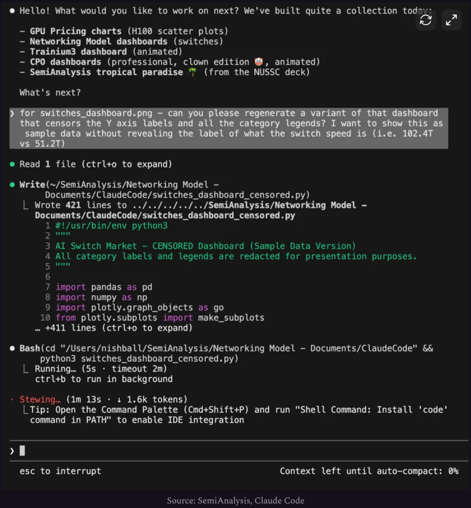
这里是输出：
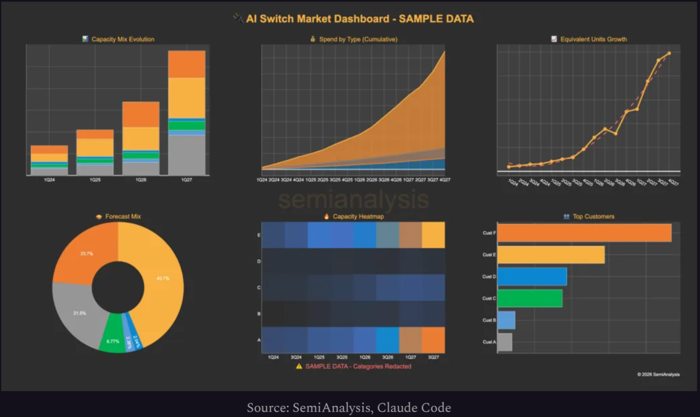
写代码的人会停止“做代码”，转而让代理替自己完成工作。Claude Code 的魔法在于：它就是能跑通。许多著名程序员终于开始拥抱这波 vibe coding，意识到写代码在很大程度上已接近“可被解决的问题”，更适合由代理来支持而非由人完成。
竞争焦点正在迁移。对“哪个模型在线性 benchmark 上最好”的执念，会显得像比较拨号上网和 DSL 的速度一样可笑。速度与性能仍重要，模型是代理的引擎，但衡量标准将是“让网站建成所需的整体信息包输出”，而不是“单个信息包的质量”。未来的网站功能将由工具调用、记忆、子代理、验证循环等编排来实现，目标是产出“结果”而非“回答”。所有信息工作终于被模型触达。
Opus 4.5 是让这一切成为可能的引擎，而线性评测里重要的东西，对代理式长周期任务可能根本不重要。后面我们会再谈。
超越编码：滩头阵地，而非终点
编码曾是最有价值的信息工作。在 2020 年左右的软件工程时代，程序员供不应求。现在，编码只是代理式信息处理颠覆的“滩头阵地”，更大的 15 万亿美元信息工作经济正在面临风险。根据 ILO，全球有 10 亿以上信息工作者，约占全球 36 亿劳动力的 1/3。
信息工作中的每一种工作流往往相似，并共享 Claude Code 已证明可行的流程：READ（摄入非结构化信息）、THINK（应用领域知识）、WRITE（产出结构化输出）、VERIFY（对照标准检查）。这覆盖了绝大部分信息工作者（包括研究！）。如果代理能吃掉软件，那还有什么劳动池它碰不到？
我们认为也有一些碰不到，但随着 Claude Code（以及 Cowork）的崛起，代理的总可服务市场（TAM）远大于单纯 LLM。像从客服、软件开发这样的细分市场，将开始进入金融服务、法律、咨询等更大的行业。这是 SemiAnalysis Tokenomics Model 的核心关注点。
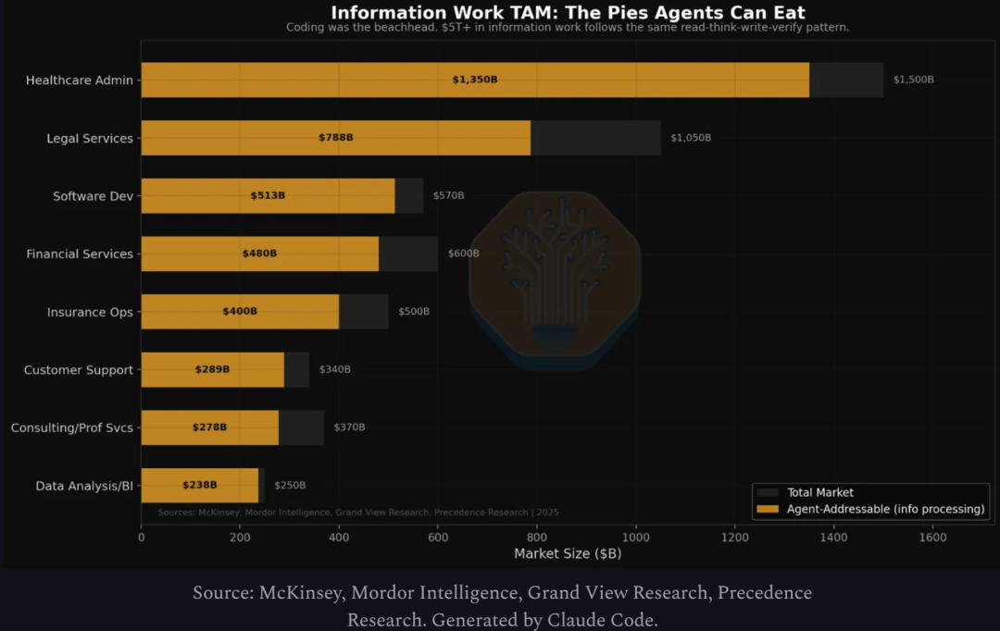
鉴于编码这一“杀手级用例”，以及 Claude Code / Cowork 明显的可泛化性，这要求一种完全不同的计算方式：自动化大多数“呼叫—响应”和信息抓取很可能是可行的，从而打开绝对美元规模。Tokenomics 模型的目标，是在 Agentic AI 扩展到商业各个环节时，追踪更多杀手级用例与 TAM。
采用约束：任务跨度（Task Horizon）
让更大部分蛋糕可被颠覆的关键，是更长的任务跨度：一个代理能在失败之前连续工作多久？METR 的数据表明，自主任务跨度每 4–7 个月翻倍（并在 2024–2025 年加速到约 4 个月一倍）。
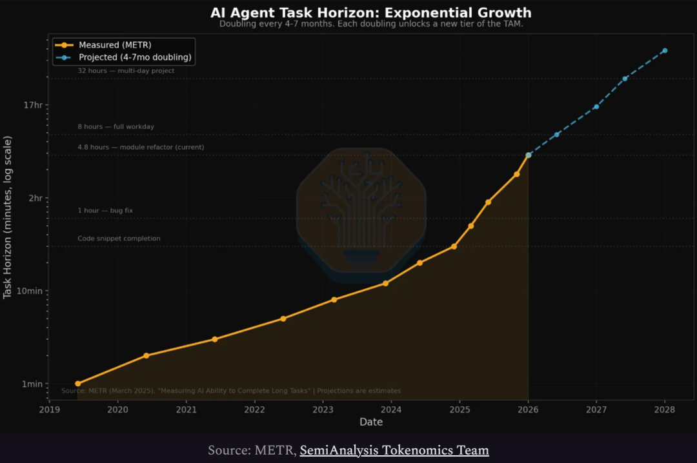
每次翻倍都会解锁更大的总蛋糕：在 30 分钟跨度时，你能自动补全代码片段；在 4.8 小时跨度时，你能重构一个模块；在多天跨度时，你能自动完成一次完整审计。而 Anthropic 显然也看到了这一点。
2026 年 1 月 12 日，Anthropic 发布了 Cowork——“面向通用计算的 Claude Code”。4 名工程师用 10 天做出来。大部分代码由 Claude Code 自己编写。架构相同：Claude Agent SDK、MCP、子代理。它能从收据生成表格、按内容整理文件、从零散笔记中起草报告。它像是“去掉终端的 Claude Code”，加上桌面端。
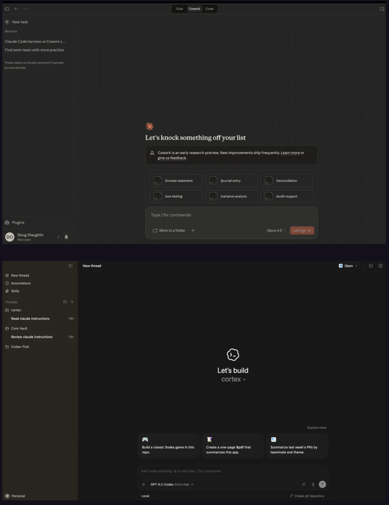
这就是未来的一瞥：一个能理解你日常工作语境的“套具（harness）”，并按需构建与生成信息处理流程。你不必先从数据库下载报告再做图；代理会替你在 Excel 里生成排版更好的报告。你需要查询销售配额时，代理会从 UI 或 API 抽取信息并替你生成报告。信息工作本身，将像 Claude Code 自动化软件工程那样被自动化。
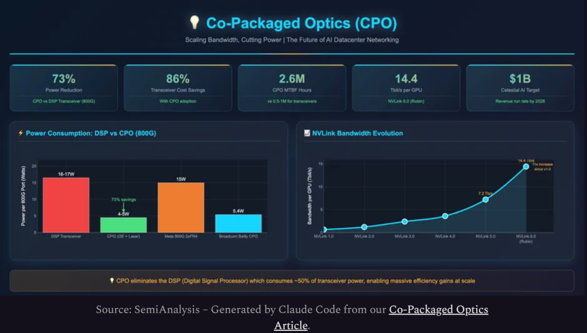
即使今天它还不完美，它显然已经能以比多数人更快的速度，完成对数据的通用处理、综合、排版，而且在某些情况下还能做到更高保真、更低成本。即便会幻觉，许多系统本来也存在大量人类主导的流程错误。如果信息能以可行的保真度被处理并交付到下一步，这本身会大幅提升工作的供给。我们已经到了这样一个点：任何人都可以在这些代理工作流里输入指令，让它做一个多变量回归——这在 2000 年代可能需要终身训练才能掌握。
Stack Overflow 2025 开发者调查显示，84% 的程序员在用 AI，这还是最前沿的采用。只有 31% 使用编码代理，这意味着“编码代理渗透”仍处早期阶段，而更广泛的信息工作将很快看到 AI 的采用。就像编码代理渗透那样“眨眼即发生”，更广泛的信息工作也会迅速被 AI 采用。
智能的价格正在崩塌
软件工程一直是信息工作的黄金标准。如今，当质量跨过关键阈值后，程序员与工具的关系翻转了：程序员本质上是在用一个黑箱工具来实现结果。而这一切之所以可能，是因为 token 智能的质量与成本都发生了惊人的下降。一个开发者配合 Claude Code，如今可以完成过去一个团队一个月的工作。
Claude Pro 或 ChatGPT 的成本是每月 20 美元，而 Max 订阅则分别是每月 200 美元。美国知识工作者的全负担日成本中位数约 350–500 美元。一个代理即便每天只处理其一小部分工作流、成本约 6–7 美元，也能带来 10–30 倍 ROI（还不算智能提升的收益）。
企业已经开始行动
智能成本的巨大通缩，将重新定价每一家信息公司的“可重复工作”的利润率。Accenture 刚签署了一项协议，为 30,000 名专业人士培训使用 Claude——这是迄今最大的 Claude Code 部署。Accenture 将聚焦金融服务、生命科学、医疗健康与公共部门，这些都是信息自动化的巨大未开发市场。OpenAI 刚宣布 Frontier，聚焦企业采用。
企业软件显然已成为“智能成本下降”的第一批受害者。SaaS 本质上是把信息工作流固化成代码。SaaS 的三大护城河——数据切换成本（数据被锁在系统里）、工作流锁定（学习 UI）、集成复杂度（比如 Slack 如何对接 Jira）——都在边际上被侵蚀。SaaS 的 75% 毛利率看起来像一个巨大机会：代理能在系统间迁移数据、迁移成本更低；代理并不依赖以人为中心的工作流；MCP 集成让集成更容易。SaaS 的每个方面都在变便宜，利润率也成为 AI 的第一块猎场。
一个简化例子：代理可以代表你直接查询 Postgres 数据库，生成图表，然后邮件发给利益相关方。这过去相当于一个 SaaS 工作流（如 CRM）的成本，但它不需要培训人去适应 UI 变化，也不需要更新软件；它就是“能跑”。BI/分析（代理查询数据库）、数据录入、ITSM（L1/L2 工单分流）与后台对账，已经在被自动化的路上！这些正在敲击软件世界最神圣护城河的大门。
我们认为，任何需要人类点击按钮、收集信息、把它重新格式化成另一种媒介（邮件、图表、Excel、演示文稿）的工作，都面临巨大风险。LLM 在这种数据互转上是天生的：轻松把文本变成音频、把英文变成中文、把文字变成图像。在我们看来，这对世界上最巨大的公司之一构成巨大威胁：微软。
竞争格局（微软的困局）
智能成本崩塌正在摧毁“按席位付费”的软件模型。而在 SemiAnalysis 内部大规模使用 Claude Code 之后，我们看到的最显著份额迁移之一，就是微软按席位的 Office 365。所谓“人类点击按钮”的定义就是微软，以及更广义的所有按席位软件。需要警惕的模式是：那些适用于多行业、且为人类设计的工作流软件集合。
如果代理会替你查询线索数据，那公司为什么还要强制标准化 Salesforce？Salesforce 是一个表单与工作流的外壳，而表单与工作流很可能被 AI 直接搭成数据库，再按需查询。每一处 UX 或偏好都在风险之中。Tableau 的概念过时了；Figma（给人看的线框图）也在风险之中。人类与电脑交互的核心方式即将改变，而微软正处在旧范式的中心。
夹在两项业务之间
我们最近（错误地）预计微软收入会加速，主要由其庞大的租赁机队与向外部代工产能迁移驱动。但我们认为，在最近一次财报电话会中，他们做了战略性收缩。引用如下：
“……我认为你们看到我们过去一段时间产品与收入的某种加速，很大程度上是因为我们把 GPU 和产能分配给过去几年招募的大量 AI 人才。然后你会发现，剩余部分用于满足 Azure 侧持续增长的需求。还有一种理解方式——我有时会被问到——如果我把 Q1、Q2 新上线的 GPU 全部分配给 Azure，那么 KPI 会超过 40。”
关键上下文是：
“我们确实在做长期决策。我们首先要解决的是销售侧的使用增长，以及 M365 Copilot 和 GitHub Copilot 或第一方应用的加速。然后我们确保在 R&D 与产品创新的长期性上持续投资。”
微软体内有两头野兽：资本市场投资者想要的 Azure 增长，以及为了保住 Office 365 产品套件而投入 Copilot。要在其中一个方向上决定性获胜，很可能必须在另一个方向上失分。而此刻，微软仍是全球最大的 AI 云之一，为 OpenAI、Anthropic 等公司出租 GPU。但他们是在把 GPU 租给那些会毁掉其生产力软件城堡的“蛮族”。
“Claude for Excel”本该是“Copilot for Excel”该做到的样子，却由外部公司在微软自己的第一方产品上发布。今天的现金流大头仍来自 Office，但终值（terminal value）的大头来自 Azure 的收入增长。为了加速 Azure，微软会让门口的蛮族更快拆墙。而当年微软与新贵达成合作，但随着 OpenAI 与 Anthropic 成为更大平台，它们是否还能被护城河挡在外面已不明确。
讽刺的是，微软在 AI 上的投入必须增加，否则 O365 套件的终值将暴跌。他们确实有分发渠道，但主要基于一个相对 AI 新贵而言定位每天都在被侵蚀的产品。与此同时，OpenAI——微软在 AI 上的核心伙伴——正在企业端遭遇 Claude Code 的冲击。OpenAI 必须迅速回应 Claude Code 在代理采用上的崛起，否则他们自己可能会显得更像基础设施公司（token），而不是解决方案公司（agent）。颠覆风险正在急剧抬升，而它正指向史上最赚钱的公司之一。
GitHub Copilot 与 Office Copilot 领先了一年，却几乎没在产品层面打开局面。与此同时，Satya 甚至亲自下场担任微软 AI 的产品经理，从 CEO 的日常事务中抽身。很明显，这一个产品的赌注可能就是整家公司。
Anthropic 的融资与爆发：为什么 Anthropic 正在赢？
这场讨论里最有趣的问题之一是：GPT-5.2 High 为了 benchmark 已经“刷榜”一年，并在过去两年里自 ChatGPT 崛起后一直占据头把交椅。SWE-bench verified 的结果基本相同，GPT-5.2 High 在 MMLU-pro 与 AIME 2025 上占优，可为什么所有人都迷恋 Opus？为什么 Claude Code 在主导？
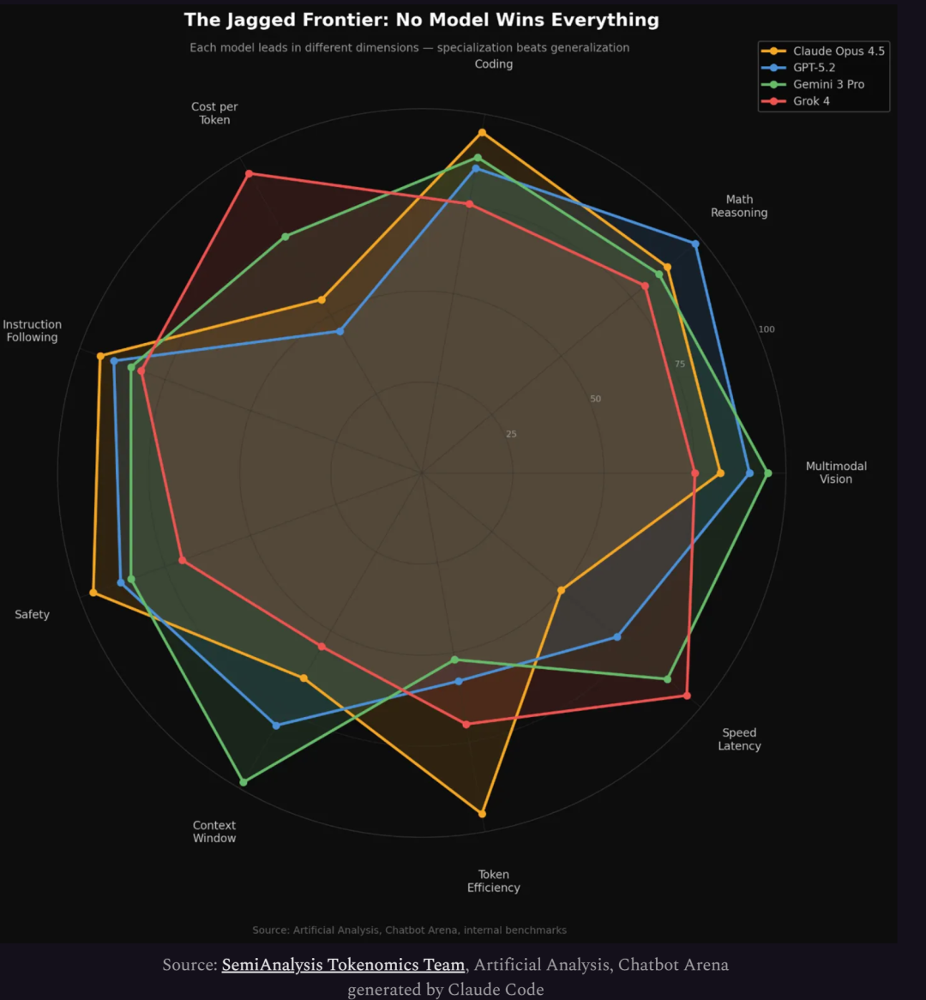
答案是 token 效率。Opus 4.5 的 token 效率显著优于 GPT-5.2 High，而这对长跨度任务的完成至关重要。
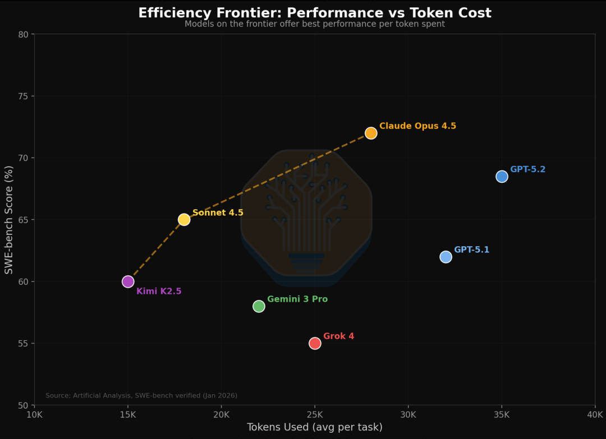
长跨度表现，本质上是在上下文窗口内跨多步骤复利式叠加信号。即使 ChatGPT 的上下文窗口更大，任务/Token 的效率曲线却讲了不同的故事。刷榜的 ChatGPT 可能在评测上更高，但它完成任务需要多一个数量级的 token，这实际上毁掉了任何长跨度规划。
我们认为，这是 Anthropic 长期以来的刻意选择：不是疯狂输出最多 token（在产生一些信号的同时制造大量噪声），而是尽可能保持最高的信噪比。这在跨多上下文窗口规划时尤为关键——任何复利式误差都会导致长跨度任务失败。
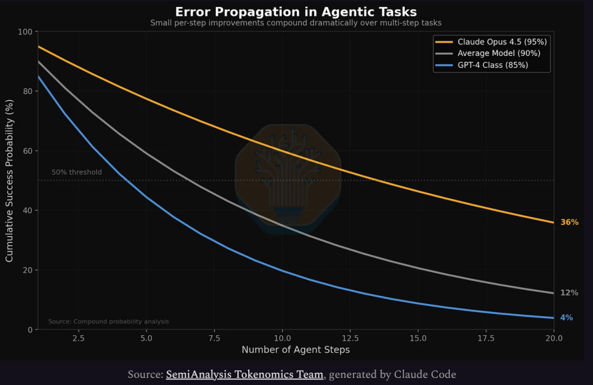
如果你在单个上下文窗口里有 90% 的表现，把它在 X 个步骤上复利叠加，即便很小的错误率也几乎必然保证最终失败。
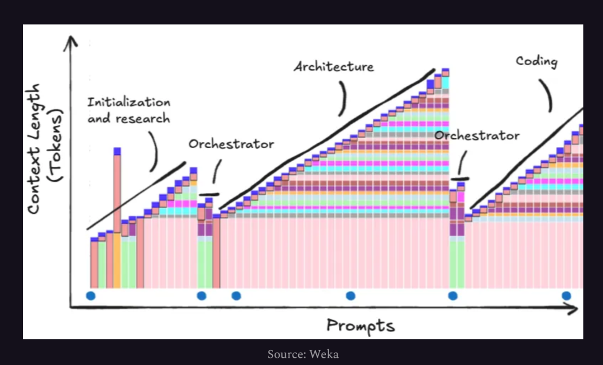
Anthropic 显然重视 token 效率。新的 Sonnet 5 据称将以更小的模型规模、配合更大的上下文窗口，在接近 Opus 4.5 的表现下发布。这会把“高效 token 曲线”的上限大幅推高，同时扩展上下文窗口。对编码代理来说，实际性能差异将是巨大的。这就是 Anthropic 相对 OpenAI 的差距。
OpenAI 会回应。他们必须回应。新的预训练（pretrain）是前提，因为更大规模似乎能改善更长上下文任务。去年 OpenAI 模型强大的一点，是拥有极长的思维链 token 上下文来完成任务。但在跨多上下文窗口的问题里，这从优势变成拐杖，因为它会复利叠加噪声。修复很直接：做一次新的预训练。我们预计未来几个月会有，但在那之前，Anthropic 领先。OpenAI 的 codex 的真实采用率远低于表面印象。
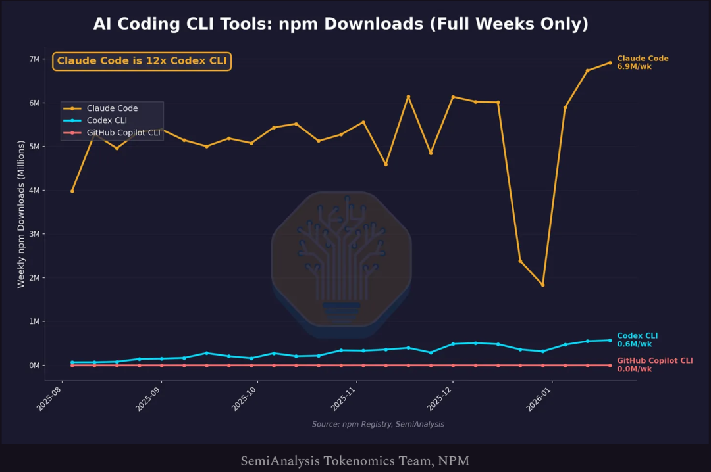
虽然 VSCode 强得多，但考虑到 GitHub 有“数百万”开发者，VSCode 的安装使用并不总能完美代表真实使用。
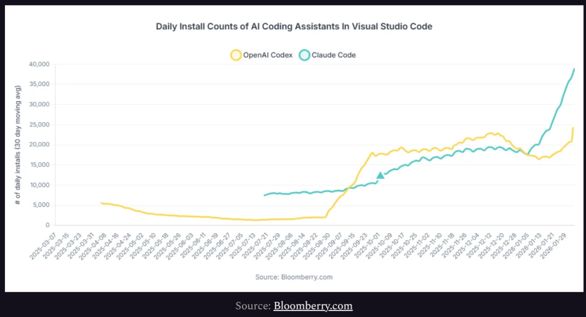
2025 年看似是一场单骑领先的竞赛，但 2026 年更像三方赛：Gemini 在图像模型驱动的消费端采用上领先（而 ChatGPT 曾经主导），Anthropic 在企业采用与代理上领先。
预训练还重要吗？
更有意思的问题是：预训练是否还重要？沿用 TCP/IP 的类比，如果代理时代像“更好的数据包”，那么更好的 TCP/IP 包未必像“更好的协调功能”那么重要。Kimi 2.5 就是个例子。它发布里最有趣的信息不是 SOTA benchmark，而是代理编排。
今年每一次模型迭代，都会像去年“推理（reasoning）”那样，把更多精力放在代理编排与性能上。Anthropic 已经越过 benchmarks，仅做模型对比不再有意义；要看的是代理们一起能完成什么。OpenAI 可能被打了个措手不及，错过了这个战略拐点。就像当初 Anthropic 与 Gemini 也没完全理解或推进 RL 与思维链拐点一样，现在看起来 Anthropic 正领先于代理化拐点。
Moonshot AI 的 Kimi 2.5 是未来模型的完美展示。Kimi 的重点几乎完全放在编排层。Kimi 2.5 发布中开源了几乎所有内容，唯独没有开源其代理编排层。PARL（Parallel Agent Reinforcement Learning，并行代理强化学习）是未来信号。使用代理能带来比 Opus 4.5 更好的表现（据其内部 benchmark）。例如 Sonnet 5 显然也面向“代理蜂群”，类似 Kimi 2.5 的 PARL 方式。
Kimi 2.5 的新编排引擎（闭源）
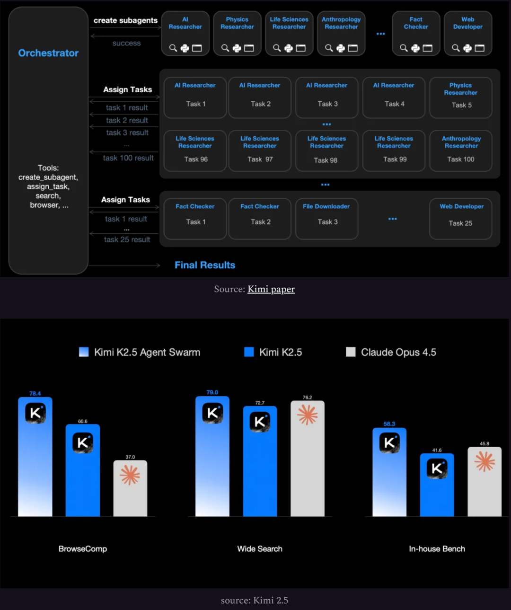
代理编排是新的 CoT（思维链）。大规模并行化代理将成为下一种能力拐点，就像更长的思维链 token 能带来更好结果一样。很快就会出现成建制的代理军团，在规模化层面完成任务！
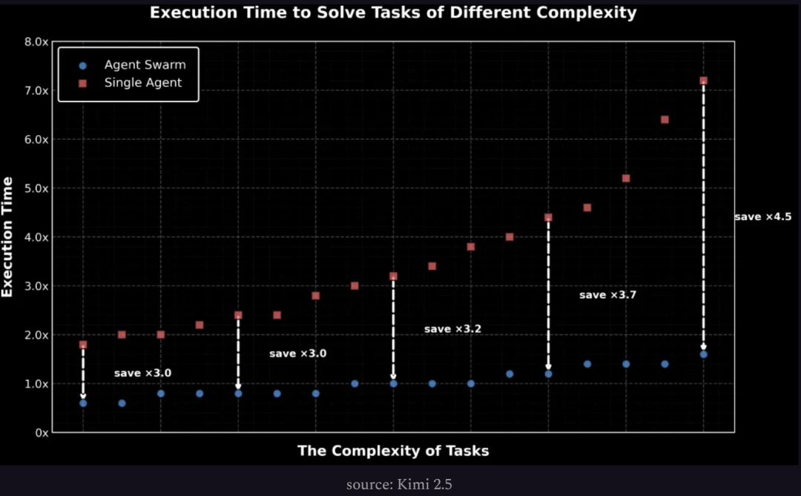
这看起来像当初 o1 性能增益那样成熟的前沿，但这一次，领先的不是 OpenAI。
不过，在对无限代理扩展感到兴奋之前，还有一个问题会成为今年竞争的真正焦点。Anthropic 最近研究发现：“在所有任务与模型中，模型花更长时间推理并采取行动时，会变得更不连贯。无论我们衡量推理 token、代理动作还是优化器步数，结果都成立。”
模型重度用户也报告了同样现象，作者基本同意：更长上下文窗口会逐步退化为不连贯。
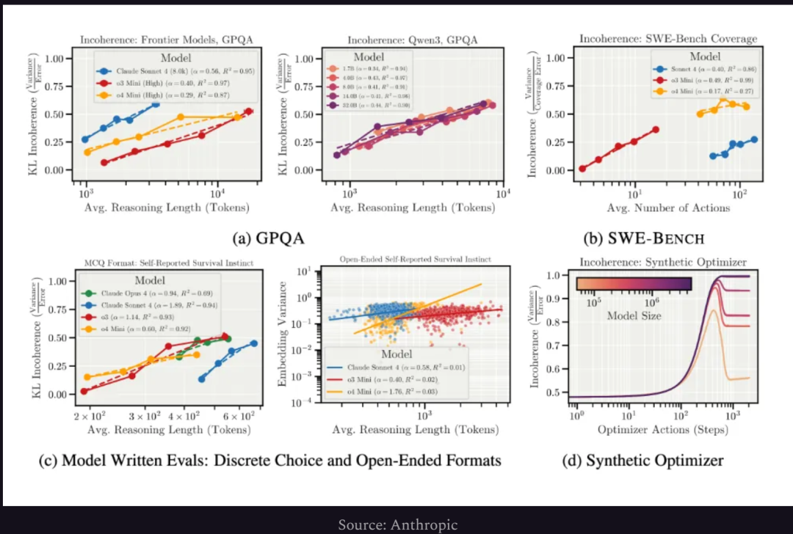
这强调了 Anthropic token 效率的优势，也解释了我们为何认为：以最少 token 完成任务，将成为质量的核心 benchmark 之一。单个上下文窗口越连贯，代理就越能扩展，等等。从模型层面看，token 效率很可能将决定谁是真正的领先者。
但在 Claude Code 崛起之际，Anthropic 的瓶颈在 FLOPs 与 MW（电力），而非能力。这种非消费驱动的需求爆发，是 2026 年必须盯住的关键拐点。用户加速带来算力需求加速，我们认为 Anthropic 即将到来的 3500 亿美元估值，将在很大程度上为其进入 GW（吉瓦）级电力扩张游戏提供资金。下图是我们对 Anthropic 追赶电力扩张的表示。
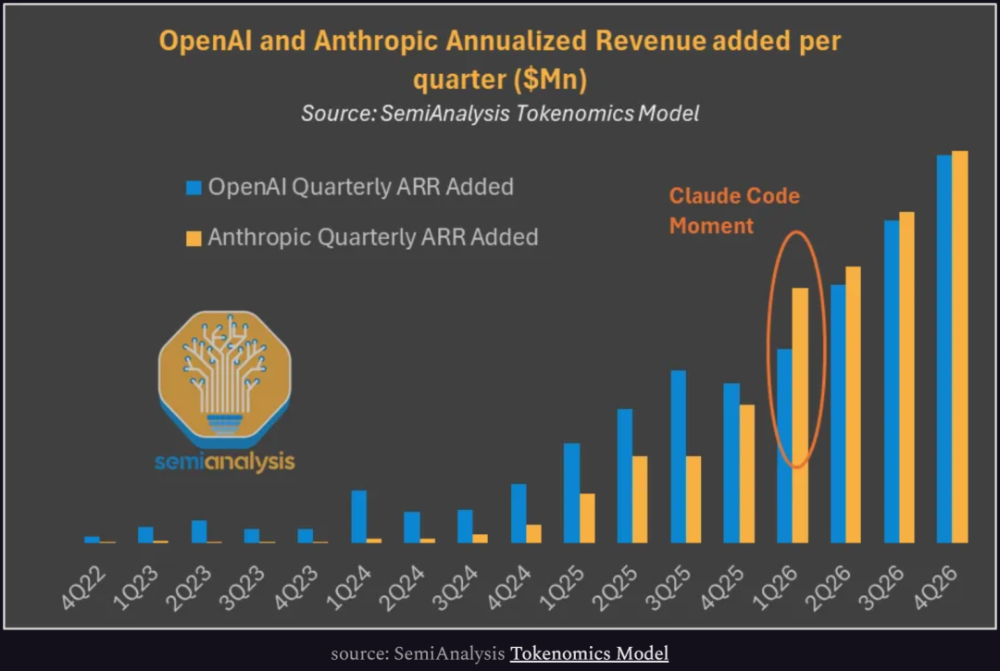
这就是 Anthropic 获胜的方式。但现在轮到 OpenAI 向世界证明：他们能预训练一个新模型，并可能再次夺回头把交椅。竞赛看起来比去年更开放，我们也期待变化继续以更快速度发生。
最后，我们将分享一些 SemiAnalysis 在信息工作上的实践给新的 Claude Code 霸主们。眼见为实，我们相信：软件创造与信息处理的边际成本已经趋近于零。接下来变化会以更快速度发生。
SemiAnalysis Vibe Coding Show and Tell
这里有一个 API 延迟测试，用于比较 ISO/OSL 并观察 24 小时周期内的延迟。
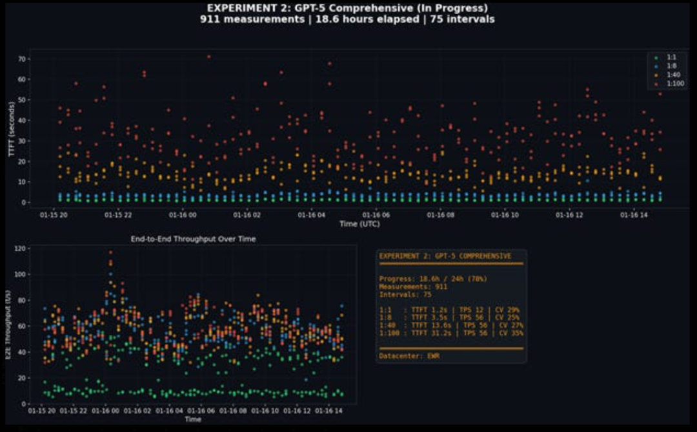
Jordan 用 vibe coding 做的一个网站，用来理解世界。
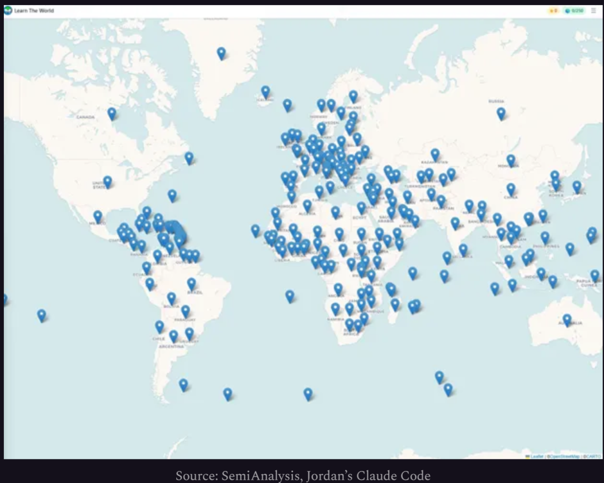
这里有一个 CLI bench，用于比较 token 效率。Kimi 2.5 表现不错，但消耗很多 token。这是一种 token 效率的表达；即便 tokens per second 更慢，实际速度也可能更快。
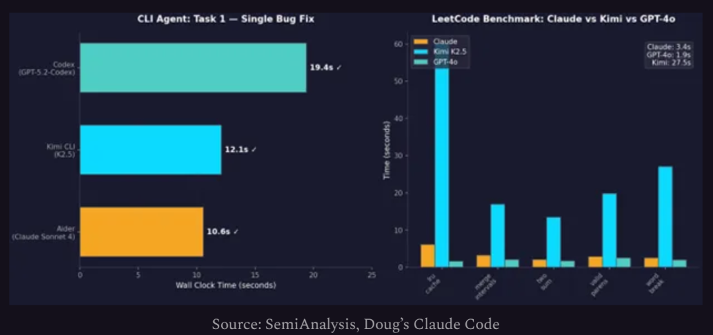
Doug 用 vibe coding 给未婚妻做的一个视频游戏。
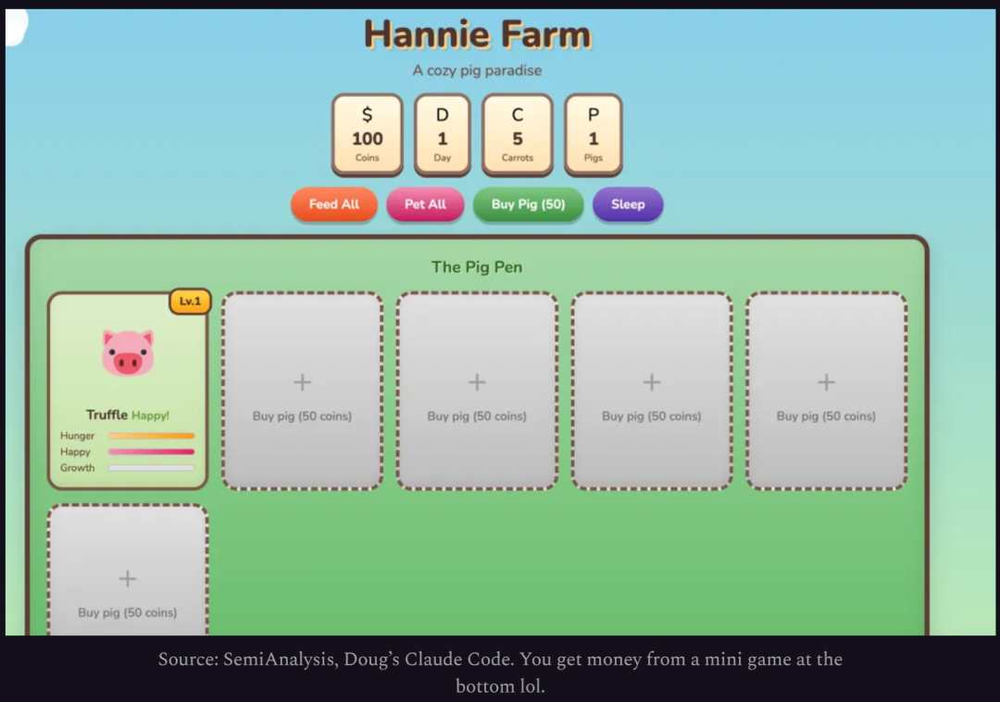
这里有一张图表，比较 TSMC 的毛利率与 Entegris 的毛利率。毛利率包含并购的备考（pro-forma）调整。
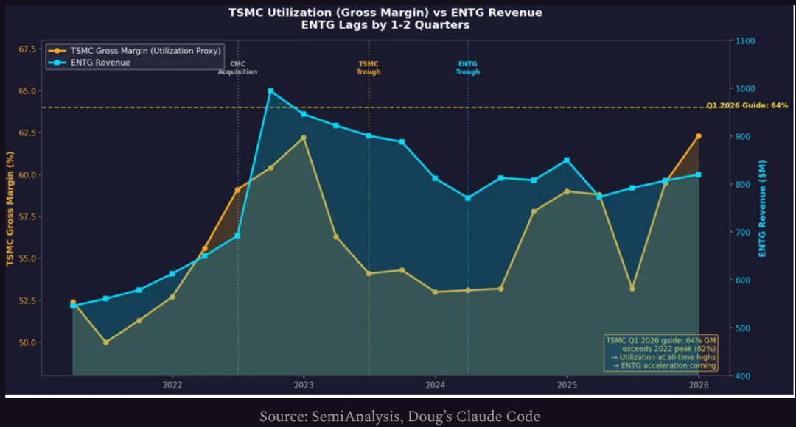
各位，智能工作的世界已经永远改变了。几乎所有的既有巨头都会受伤。别听任何人说“这对软件公司是好事，因为他们会卖更多软件”。互联网上的广播电台不是一门生意。
结论：模型是新的 TCP/IP
在 1970–1980 年代，TCP/IP 面临相当多的竞争者：OSI、IBM SNA、Novell IPX/SPX 等协议都在争夺标准。但你现在也知道了：没人真正在乎协议本身，更在乎建立在信息包之上的最佳信息与应用。我们正处在同样重要的时刻，而 Claude Code 是第一个证据点。仅 Claude Code 一项，就已经生成了 GitHub 每日 4% 的提交，而且还在上升。
未来将取决于代理如何驾驭海量 token 来构建更大更好的项目。Claude Code 是第一个“网站”，也是我们对更远代理化未来的最佳一瞥。信息工作即将显著加速，竞争也将急剧升温。